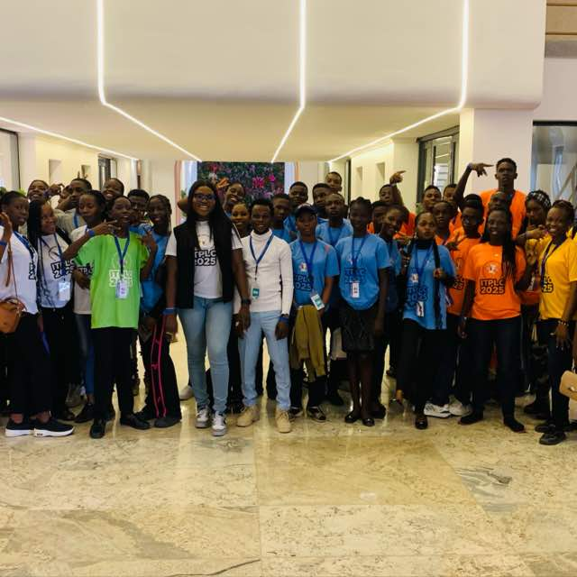

Welcome to The Prolific Teens and Youth Ministry, a vibrant community of young believers committed to growing in faith, purpose, and excellence.
We are passionate about raising a generation rooted in Christ, equipped to lead, serve, and make impact in this generation.

We grow together in faith...
Reaching the last lost soul
if you aren't born again kindly take the prayer of salvation and mean it with all your heart.
"O Lord God, I believe with all my heart in Jesus Christ,
Son of the living God. I believe he died for me and God
raised him from the dead. I believe he's alive today. I
confess with my mouth that Jesus Christ is the lord of
my life from this day. Through Him and in his name,
I have eternal life; I'm born again. Thank you lord, for
saving my soul! I'm now a child of God. Hallelujah!"